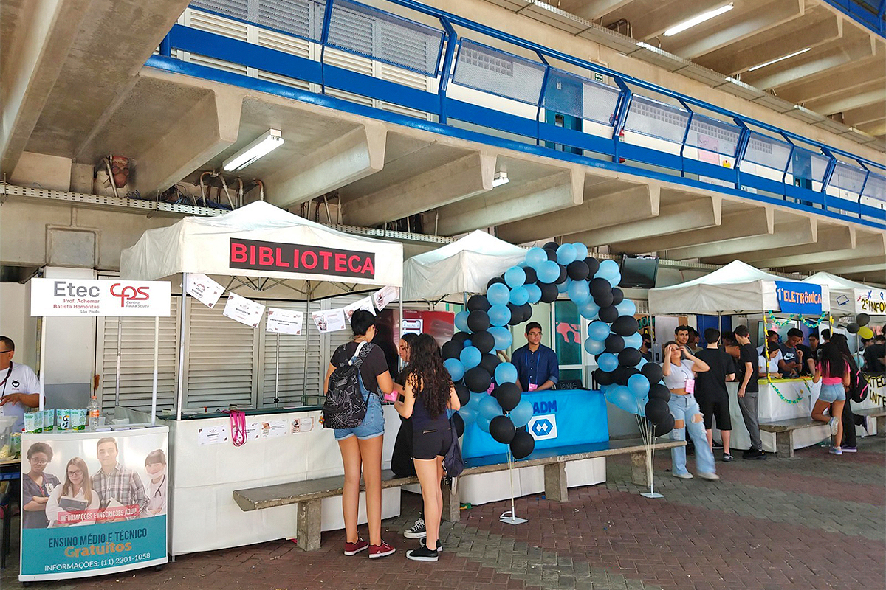

Feira das Profissões 2024 da Escola Adhemar Batista Hemeritas destaca projetos inovadores
Evento reúne alunos, professores e visitantes no dia 23 de outubro.
No dia 23 de outubro, a ETEC Adhemar Batista Heremitas promove a Feira das Profissões 2024, evento que tem como objetivo aproximar os estudantes das várias possibilidades de carreira e áreas de atuação.
Diversos alunos e convidados também participarão, oferecendo orientações práticas e dicas de carreira.